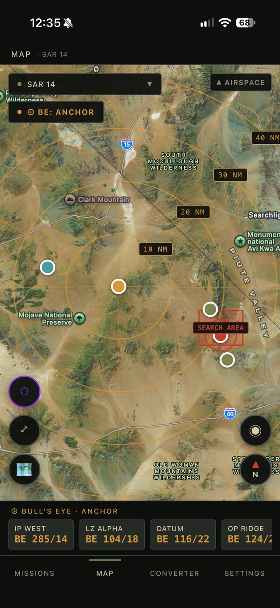
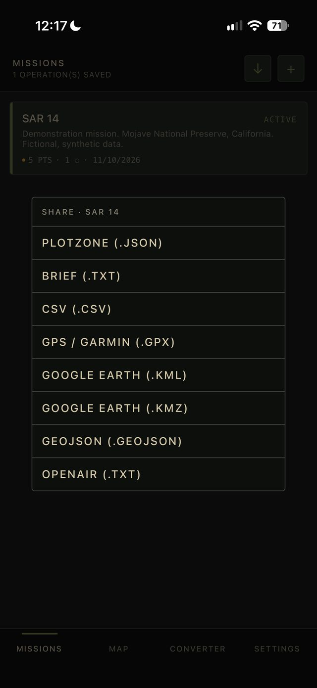

Tactical plotting. Nothing leaves your device.
Plot points, work out Bull’s Eye bearings, convert coordinates between five formats, draw your zones, read the MGRS and GARS grids, and load your own airspace files and offline maps, all on a satellite map, or on your own, with no account and no data collection.
Download on the App Store

Your points and zones, grouped by operation. Each point carries a name, its coordinates, a radius in metres, feet or nautical miles, and a colour. Drag a point to move it, and one tap undoes the move if you got it wrong.
Pick one point as the reference. PlotZone then gives the bearing and distance from it to every other point of the mission, and draws rings around it every 10 NM out to 120 NM, with radials every 30°.
Decimal degrees, degrees-minutes-seconds, degrees-decimal-minutes, MGRS and UTM, converted in either direction. Touch the map to read a position, touch a result to copy it.
Type the vertices or draw the polygon with your finger, adjust each corner, watch its area and perimeter as you go.
Load your working area from your own files, whether they hold a georeferenced chart or plain outlines. PlotZone reads KMZ, KML, OpenAir and GeoJSON, and shows several areas at once.
The MGRS grid at 1 km or 100 m, labelled the way a military map is: grid zone, 100 km square, and the principal digits of every square, read right then up. At a grid zone junction the grid switches zones with you.
Your position, tracked without pause, with its accuracy and altitude. Tap a point, or any spot on the map, and you get the bearing and distance from where you stand, updated as you walk. Bearings in true north, as on a map, or in magnetic north, as on a compass.
Import your own map in MBTiles format: its tiles are written to the device, and the map works with no connection at all.
Reading a map that is not in WGS84? Choose its datum, NAD27 for US maps from before 1990, ED50, OSGB36 or AGD66, and read or type coordinates in that system.
The GARS grid at 30’ or 15’ with its designators, laid over the base map.
Two taps on the map give the bearing and distance between them.
Export a mission to back it up or pass it on, then import it back with nothing lost. Eight formats: PlotZone (.json), a plain-text brief with the bearings, the distances and the route leg by leg, CSV, GPX, KML, KMZ, GeoJSON and OpenAir.
PlotZone does not collect, store or transmit any personal data. Your missions, the airspace files you load and the tiles of your offline maps are saved on your device alone. Your position is followed only while you ask for it, to draw you on the map: it is never transmitted or shared. No account, no tracker, no analytics, no advertising.
English, French, Spanish, German, Italian, Dutch, Portuguese and Chinese.
Coordinate conversions and distance calculations are provided for guidance. Always check your data against an official source before any critical use. PlotZone is not a certified navigation instrument.
Reportez. Mesurez. Transmettez. Rien ne quitte votre appareil.
Reportez des points, calculez des relèvements en Bull’s Eye, convertissez des coordonnées entre cinq formats, tracez vos zones, lisez les carroyages MGRS et GARS, chargez vos propres espaces aériens et vos cartes hors ligne, le tout sur une carte satellite, ou sur la vôtre, sans compte et sans collecte de données.
Vos points et vos zones, regroupés par opération. Chaque point porte un nom, ses coordonnées, un rayon en mètres, pieds ou milles nautiques et une couleur. Déplacez un point au doigt, et un toucher annule le déplacement si vous vous êtes trompé.
Désignez un point comme référence. PlotZone donne alors le relèvement et la distance qui séparent chaque autre point de celui-là et trace autour de lui des anneaux tous les 10 NM jusqu’à 120 NM, avec des radiales tous les 30°.
Degrés décimaux, degrés-minutes-secondes, degrés-minutes décimales, MGRS et UTM, convertis dans les deux sens. Touchez la carte pour lire une position, touchez un résultat pour le copier.
Saisissez les sommets au clavier ou tracez le polygone au doigt, ajustez chaque sommet, lisez sa surface et son périmètre pendant que vous dessinez.
Chargez votre zone de travail depuis vos propres fichiers, qu’ils portent une carte géoréférencée ou de simples contours. PlotZone lit le KMZ, le KML, l’OpenAir et le GeoJSON et affiche plusieurs espaces à la fois.
Le carroyage MGRS au kilomètre ou à l’hectomètre, étiqueté comme une carte d’état-major : zone de grille, carré de 100 km et chiffres principaux de chaque case. À une jonction de fuseaux, la grille change de fuseau avec vous.
Votre position suivie en continu, avec sa précision et son altitude. Touchez un point, ou n’importe où sur la carte : relèvement et distance depuis l’endroit où vous êtes, réactualisés à chaque pas. Relèvements en nord vrai, comme sur une carte, ou magnétique, comme à la boussole.
Importez votre propre carte au format MBTiles : ses tuiles sont écrites sur l’appareil, et la carte fonctionne sans aucune connexion.
Votre carte n’est pas en WGS84 ? Choisissez son système géodésique, NAD27 pour les cartes américaines d’avant 1990, ED50, OSGB36 ou AGD66, et lisez ou saisissez vos coordonnées dans ce système.
Carroyage GARS en 30’ ou 15’ avec ses désignateurs, superposé au fond de carte.
Deux appuis sur la carte donnent le relèvement et la distance entre les deux points.
Exportez une mission pour la sauvegarder ou la transmettre, puis réimportez-la sans rien perdre. Huit formats : PlotZone (.json), une fiche en texte brut avec les relèvements, les distances et l’itinéraire branche par branche, le CSV, le GPX, le KML, le KMZ, le GeoJSON et l’OpenAir.
PlotZone ne collecte, ne stocke et ne transmet aucune donnée personnelle. Vos missions, les fichiers d’espace aérien que vous chargez et les tuiles de vos cartes hors ligne sont enregistrés uniquement sur votre appareil. Votre position n’est suivie que tant que vous le demandez, pour vous afficher sur la carte : elle n’est jamais transmise ni partagée. Aucun compte, aucun traceur, aucun outil d’analyse, aucune publicité.
Français, anglais, espagnol, allemand, italien, néerlandais, portugais et chinois.
Les conversions de coordonnées et les calculs de distance sont fournis à titre indicatif. Vérifiez toujours vos données auprès d’une source officielle avant tout usage critique. PlotZone n’est pas un instrument de navigation certifié.